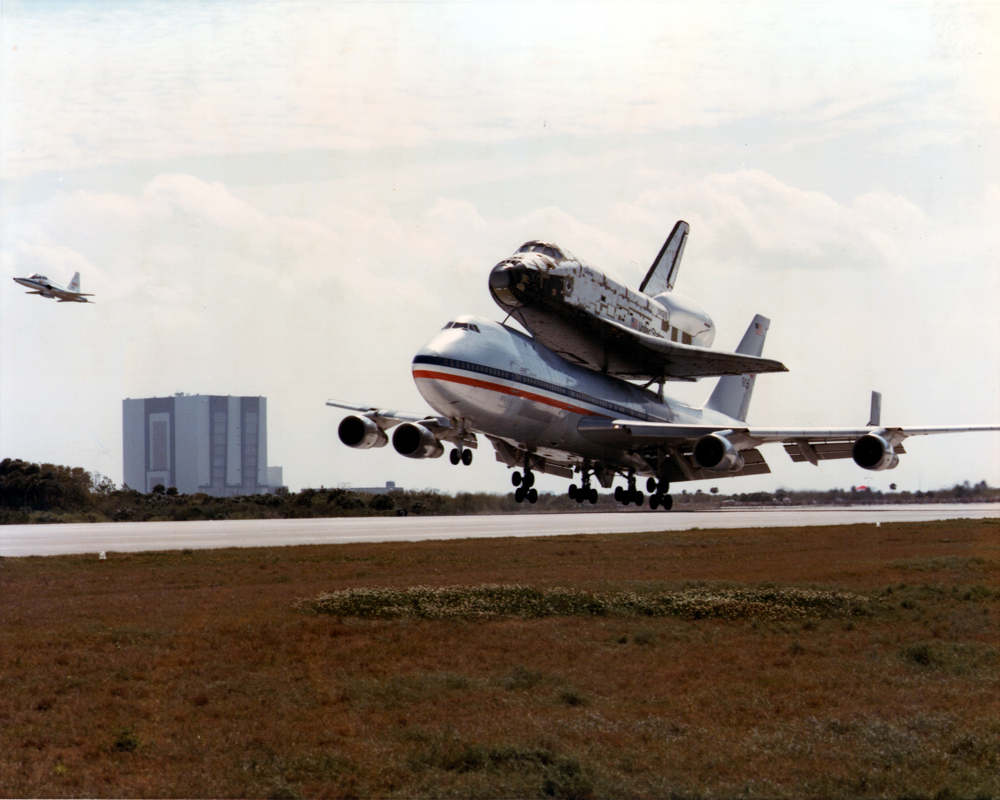

STS-1 est la première mission du programme de la navette spatiale. Ce programme a été créé après les missions Apollo. Il avait pour but de développer les premiers vaisseaux spatiaux réutilisables, permettant des lancements réguliers. Ces missions servaient à tester des expériences scientifiques, à envoyer des pièces pour la Station Spatiale Internationale (ISS), à mettre en orbite des satellites et même à réparer des équipements tels que le télescope spatial Hubble. Pour tester ces vaisseaux, un prototype nommé Enterprise a d'abord été construit. Il servait à expérimenter les capacités de vol plané de la navette. La première mission opérationnelle, STS-1, a été réalisée avec la navette Columbia, tristement célèbre pour la mission STS-107, au cours de laquelle elle a été détruite lors de sa rentrée atmosphérique en 2003, entraînant la mort de sept membres d'équipage. STS-1 s’est déroulée avec un équipage réduit de deux personnes, le minimum requis (la capacité maximale étant de sept). L’objectif principal de cette mission était de tester le bouclier thermique de la navette pendant la rentrée atmosphérique, ainsi que de vérifier les performances du réservoir principal et des propulseurs. Le lancement a eu lieu au Kennedy Space Center en Floride. La mission s’est déroulée sans encombre. Pendant le vol, la trappe principale de la soute a été ouverte pour tester son fonctionnement. Cependant, à l’atterrissage, la piste du Kennedy Space Center n’était pas encore prête, notamment à cause des marées environnantes et d’une longueur insuffisante. Une piste au Texas a donc été choisie pour l’atterrissage, qui s’est effectué sans incident. Une fois la mission terminée, la navette Columbia a été ramenée au Kennedy Space Center grâce à un avion spécialement modifié, qui transportait la navette sur son dos. Après l’arrivée, la navette a été révisée et préparée pour la mission suivante, STS-2, dont l’objectif principal était de tester le bras robotique de la navette. Mais nous parlerons de cela une autre fois. fait un aperçu rapide
